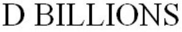

Trade Mark Journal No.2026/012 20 March 2026
WO0000001904717 (3,10,12,15,18,20,21,24)
Office of origin: Kyrgyzstan
Date of International Registration:9 September 2025
Date of designation in the UK:
9 September 2025

A word trademark consisting of the word combination "D Billions" in standard font of the Latin alphabet.
- Class 3
- Baby body milk; baby lotions; baby oils [toiletries]; baby wipes; baby wipes impregnated with cleaning preparations; bath bombs for cosmetic purposes; bath creams for babies; bath crystals; bath flakes; bath foam; bath soap; beauty masks; bleaching preparations and other substances for laundry use; body deodorants; body glitter; body lotions; body sprays; body wash; cakes of toilet soap; cleaning, polishing and abrasive preparations; cosmetic creams; cosmetic pencils; cosmetic preparations for the bath and shower; cosmetics for babies; cosmetics for children; cotton swabs for cosmetic purposes; cotton wool for cosmetic purposes; cotton wool impregnated with make-up removing preparations; creams for leather; dental bleaching gels; deodorants for human beings or for animals; depilatory wax; essential oils; eyebrow pencils; foot balm for babies other than medicinal; hair conditioners; hair conditioners for babies; hair lotions; hair mousse for babies; hair spray; lip balms; lip glosses; lipsticks; lotions for cosmetic purposes; massage gels, other than for medical purposes; micellar water; nail art stickers; nail glitter; nail varnish; non-medicated care preparations for babies; non-medicated cosmetics and toiletry preparations; non-medicated dental care preparations; non-medicated dentifrices; oils for cosmetic purposes; oils for perfumes and scents; oils for toilet purposes; perfume; perfumes; perfumery; scented soap; scented water; shampoo for babies; shower gels; soap; suntan creams for babies; teeth whitening pens; toilet water; toothpaste.
- Class 10
- Apparatus, devices and articles for nursing infants; arch supports for footwear; baby teething mittens; chains for dummies; clips for dummies; cooling pads for first aid purposes; covers for baby feeding bottles; dummies for babies; babies' bottles; feeding bottle valves; feeding bottles; feeding bottles for babies; gum massagers for babies; orthopaedic footwear; sleep devices, namely, devices for inducing sleep by emitting sound, fragrance, or light; teats for use with babies' feeding bottles; teething rings; teething rings incorporating infant rattles; teething soothers; wheeled walkers to aid mobility; parts and fittings for all of the aforementioned goods.
- Class 12
- Apparatus for locomotion by land, air or water; bags adapted for pushchairs; baby carriage canopies; bicycles; booster seats for use in vehicles; children's seats for vehicles; electric bicycles; electric tricycles; fitted car seat covers; fitted covers for prams; fitted footmuffs for prams; fitted footmuffs for pushchairs; motor scooters; motorized skateboards; motorized tricycles; mopeds; motorcycles; pram covers; prams; pushchair covers; pushchair hoods; pushchairs; rubber bumpers for baby strollers; scooters; self-balancing boards; self-balancing electric unicycles; wheelchairs; parts and fittings for all of the aforementioned goods.
- Class 15
- Cases for musical instruments; conductors' batons; electronic musical instruments; musical boxes; musical instruments; plectrums for musical instruments; rattles [musical instruments]; stands for musical instruments; stringed musical instruments; woodwind musical instruments; musical instruments for children; parts and accessories for all of the aforementioned goods.
- Class 18
- Animal skins; attaché cases; backpacks for carrying infants; bags; bags [envelopes, pouches] of leather, for packaging; bags for campers; bags for kits; bags for sports; baby carriers; beach bags; carrying bags; carrying bags for babies; garment bags for travel; handbags; harnesses (leashes); infant carriers worn on the body; leisure bags; luggage and carrying bags; motorized suitcases; portmanteaux; pouch baby carriers; purses; reins for guiding children; reusable shopping bags; school bags; sling bags for carrying infants; baby carriers [slings or harnesses]; slings for carrying infants; suitcases; suitcases with wheels; toilet bags, not fitted; umbrella covers; umbrellas; umbrellas and parasols; valises; wheeled shopping bags; parts and accessories for all of the aforementioned goods.
- Class 20
- Anti-roll cushions for babies; baby changing mats; baby changing platforms; baby changing tables; baby gates; bassinets; bean bag chairs; bedding, except linen; bed rails; bolsters for babies; bumper guards for cribs; chairs [seats]; children's furniture; chests for toys; containers, not of metal, for storage or transport; cots for babies; cradles for infants; cradles for infants, electric; garden furniture; head-supporting pillows; high chairs for babies; infant walkers; inflatable furniture; mattresses; mats for infant playpens; mats, removable, for sinks; meerschaum; pillows; playpens for babies; portable baby bath seats for use in bath tubs; reusable baby changing mats; rocking cots; school furniture; shells; sleeping mats of bamboo or straw; sleeping pads; stools; support cushions for use in baby seats; support cushions for use in child car seats; travel cribs; wall-mounted baby changing platforms; wall plaques of bone, ivory, plaster, plastic, wax or wood; yellow amber; unworked or semi-worked bone, horn, whalebone or mother-of-pearl; parts and accessories for all of the aforementioned goods.
- Class 21
- Articles for cleaning purposes; baby bath tubs; baby baths, portable; baking utensils; beverageware; boxes for sweets; brushes, except paintbrushes; buckets; candle jars [holders]; chamber pots; coin banks; cookie jars; comb and sponges; cups; diaper disposal pails; disposable portable potties for adults and children; earthenware; flower pots; glass, unworked or semi-worked, except building glass; glassware, porcelain and earthenware; hairbrushes; heaters for feeding bottles, non-electric; inflatable bath tubs for babies; lunchboxes; material for brush-making; mugs; piggy banks; porcelain ware; potties for children; shampoo shields; stands for portable baby baths; tablemats, not of paper or textile; toothbrushes; toothbrushes, electric; toothbrushes for children; parts and accessories for all of the aforementioned goods.
- Class 24
- Baby blankets; baby buntings; baby changing cloth of textile; bath linen; bed blankets; bed linen; cot bumpers [bed linen]; covers for duvets; curtains of textile or plastic; diaper changing cloths for babies; drapes; face towels of textile; handkerchiefs of textile; household linen; household linen of textile; mattress covers; picnic blankets; pillowcases; quilt sheets; shower curtains of textile or plastic; sleeping bags for babies; swaddle blankets; table covers of textile; table linen, not of paper; tea towels; towels of textile; travelling rugs [lap robes]; textiles and substitutes for textiles; parts and accessories for all of the aforementioned goods.
Umetaliev Ernist Baktybekovich
Representative: ARTE Law Firm, Saodat Shakirova, 13, Turusbekov Street, Bishkek, KYRGYZSTAN